Domaine
Outils

Description
Le Domaine de Kerlann est un domaine situé en Bretagne, installé dans une ancienne longère du XVIIe siècle au cœur d'un parc de plus d'un hectare. Le lieu développe deux activités complémentaires : des séjours dans plusieurs maisons de caractère et l'accueil de séminaires et événements professionnels.
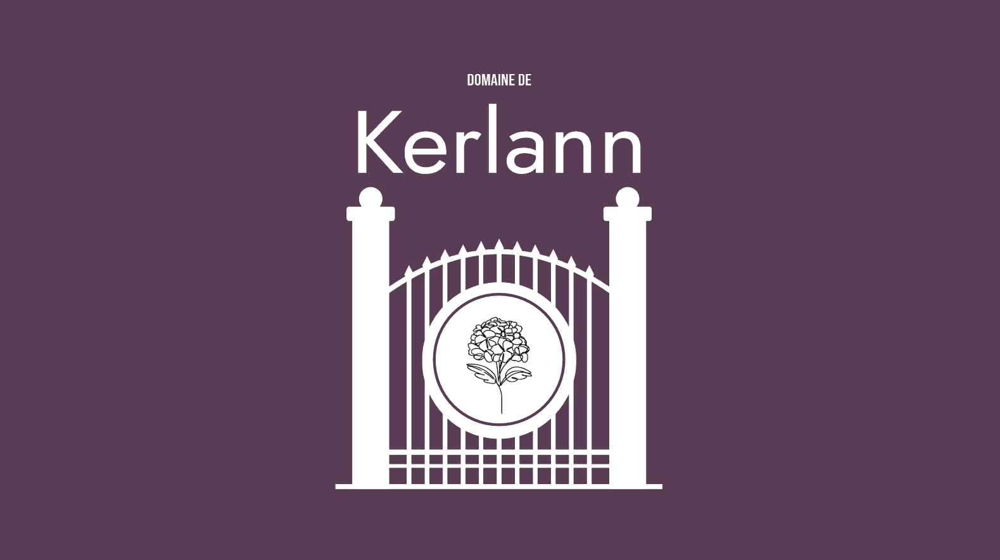
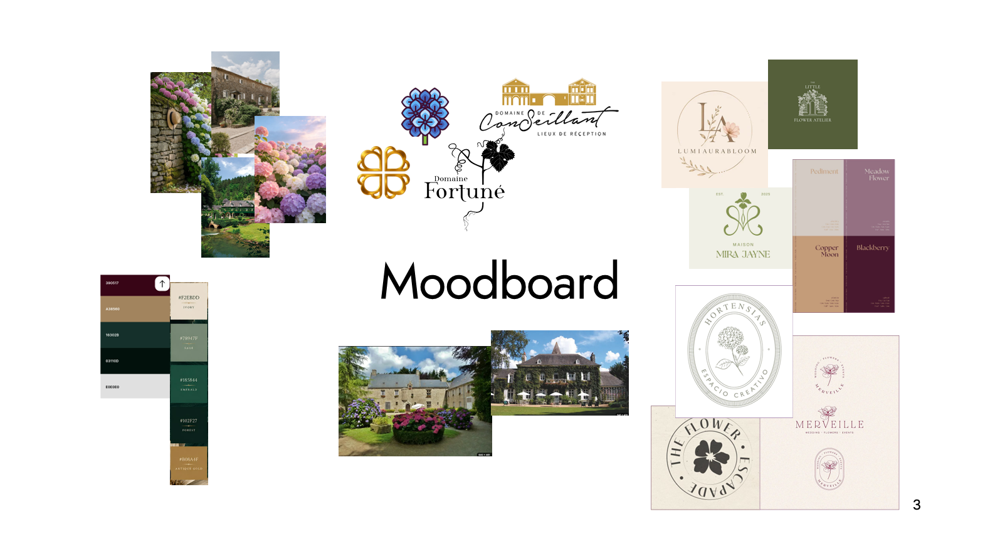
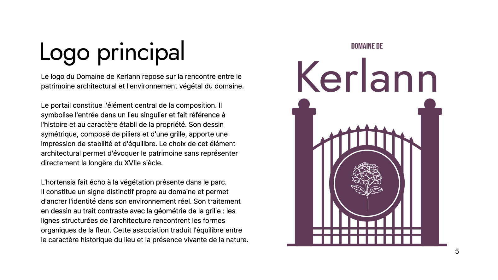
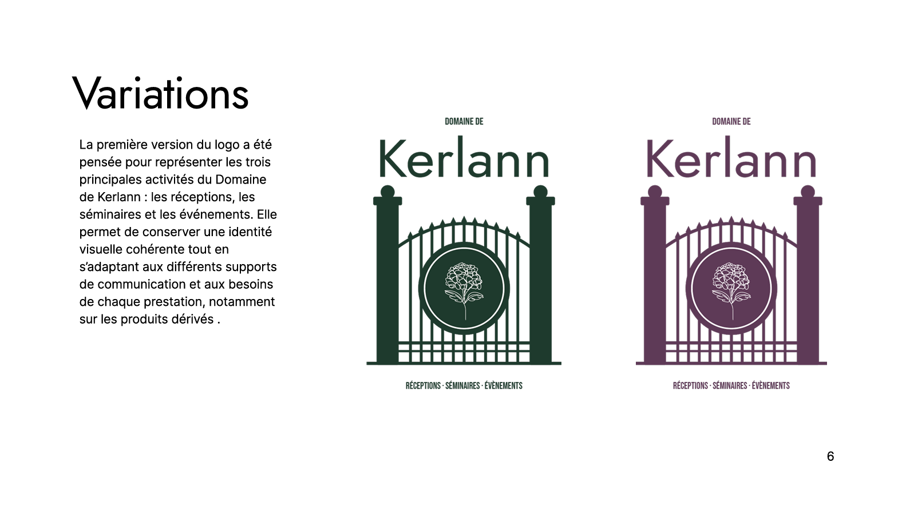
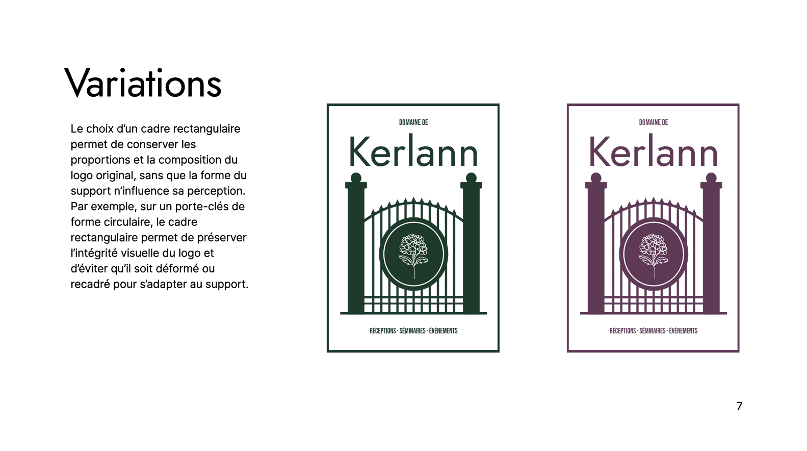
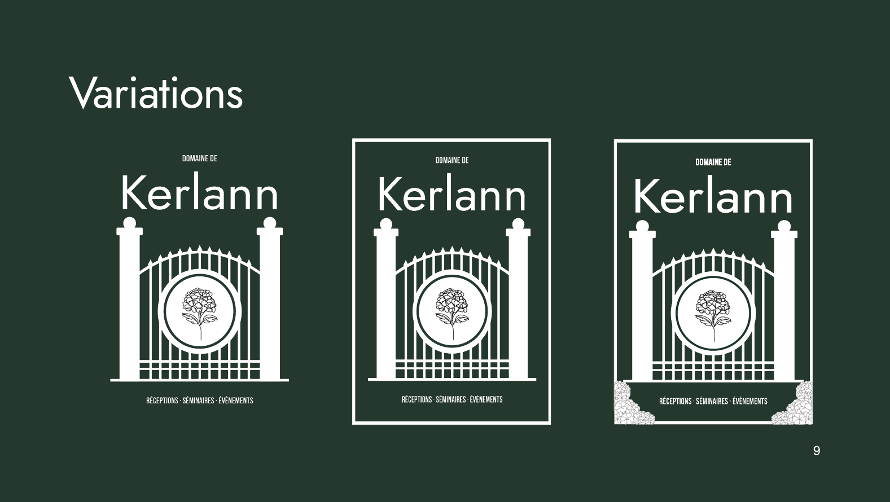
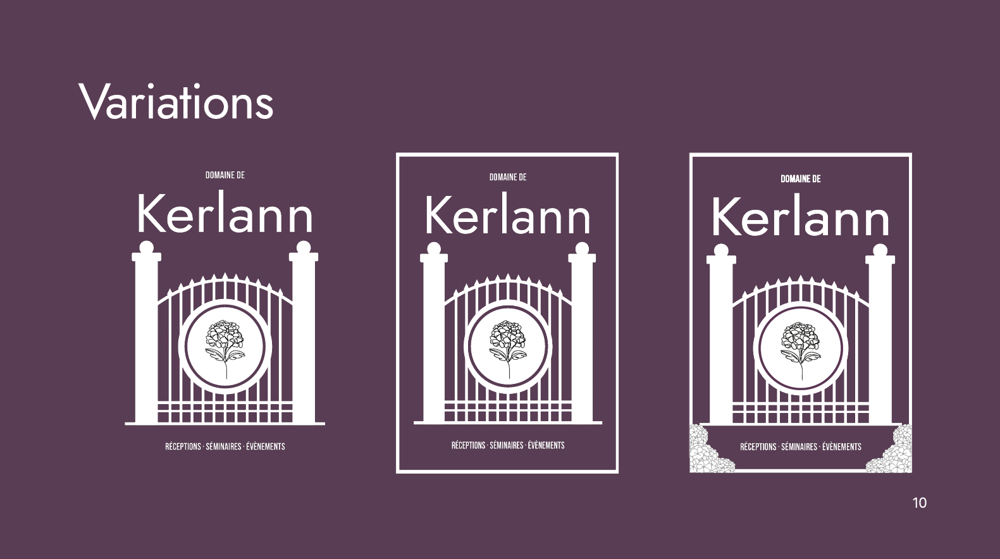
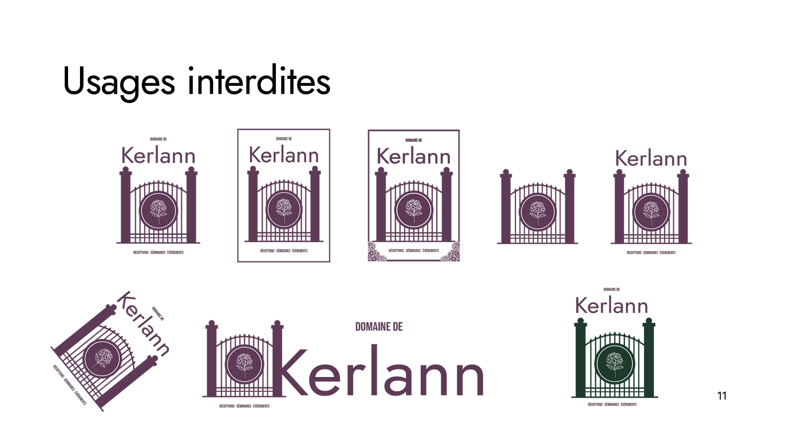
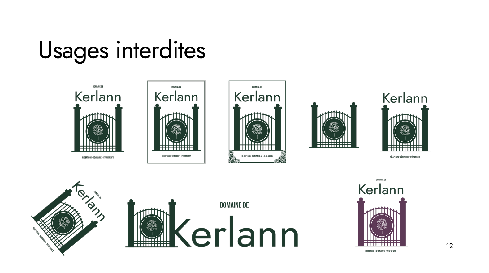
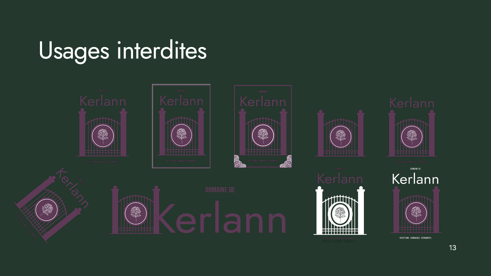
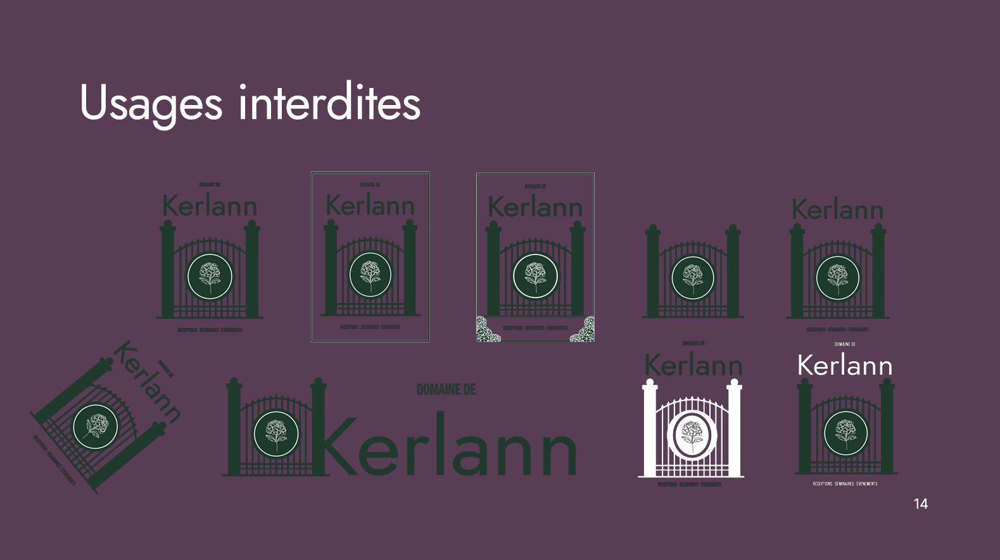
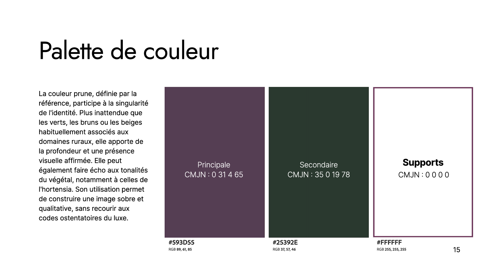
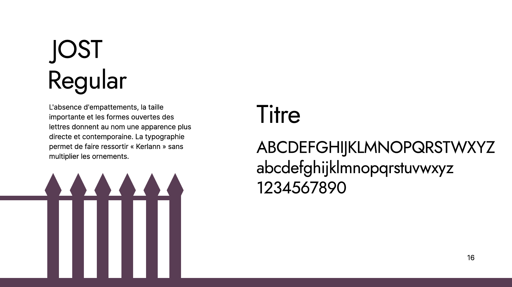
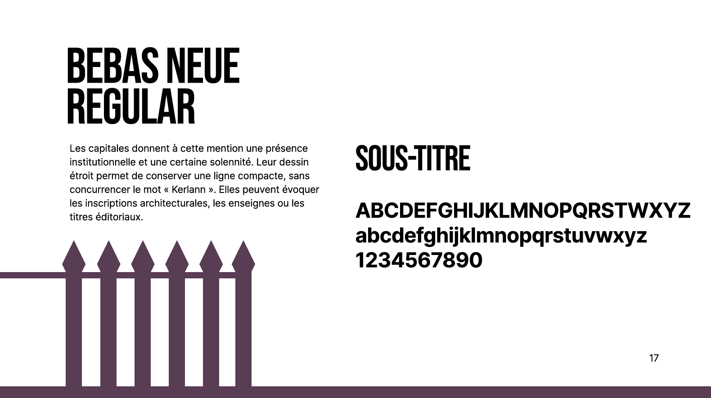
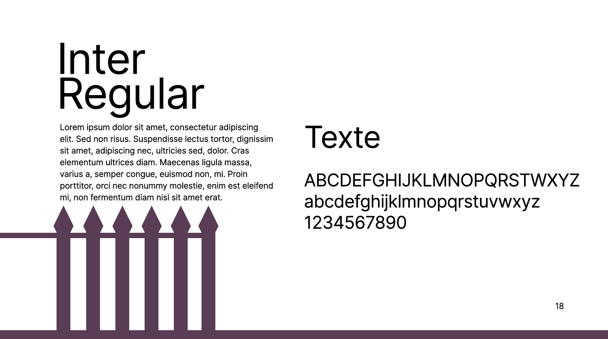
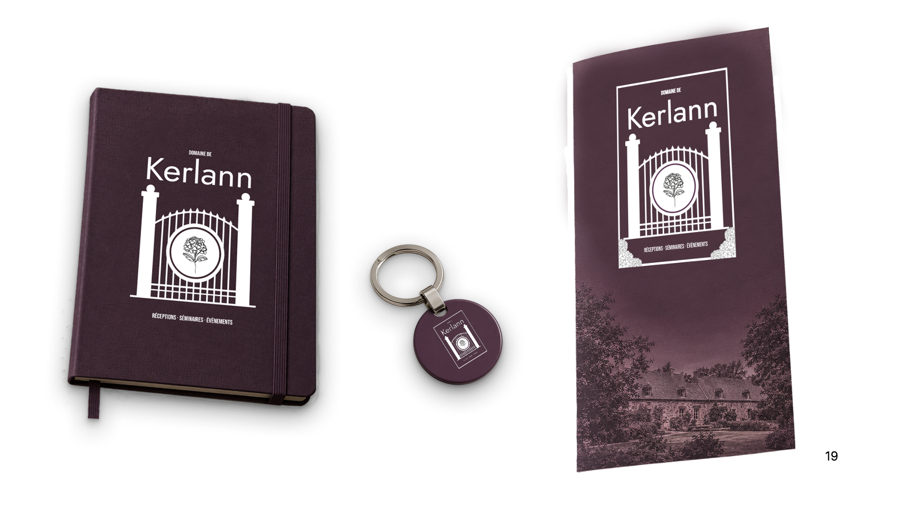
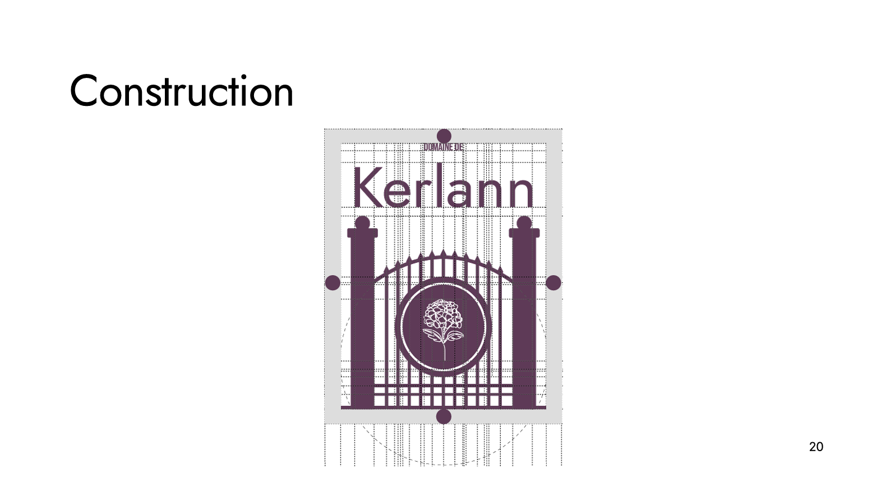